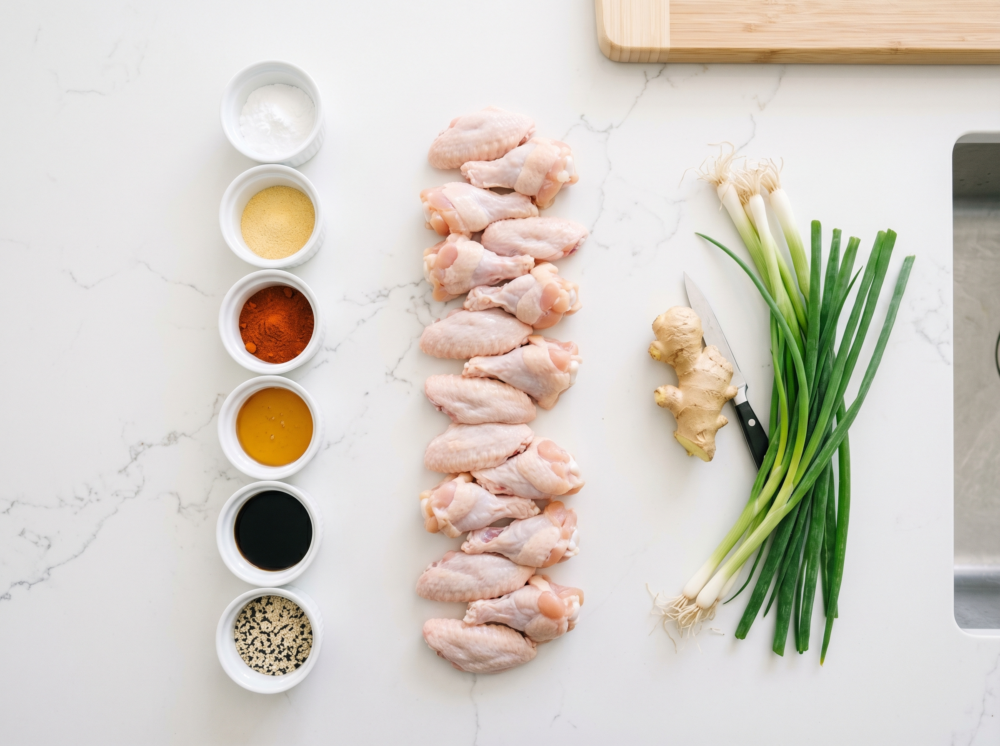
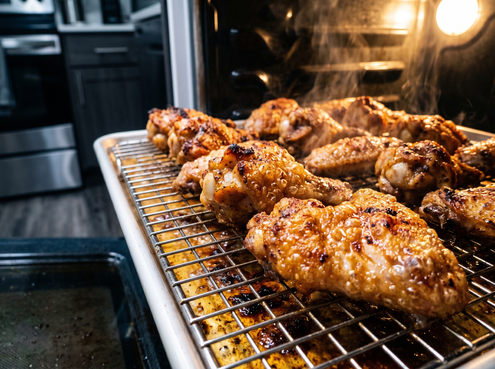
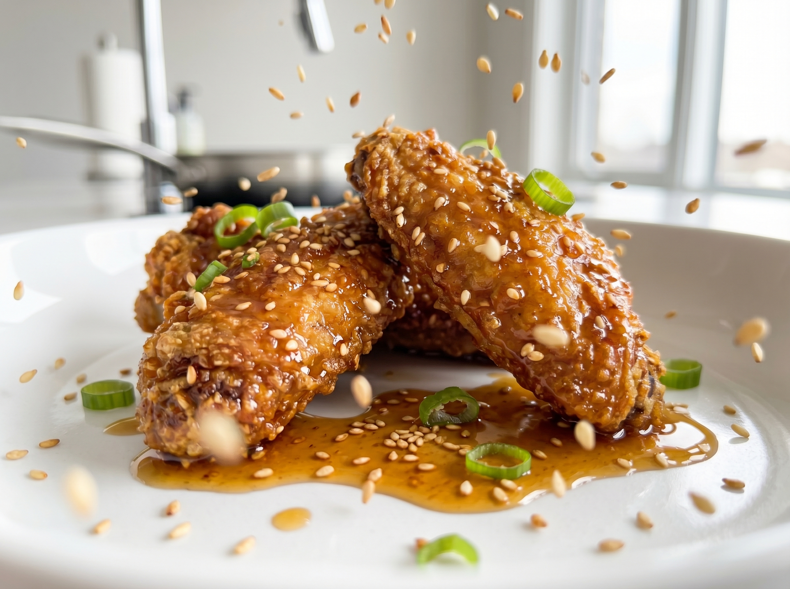

I'm going to tell you a secret that changed the way I make chicken wings forever: baking powder — not baking soda, not any special coating — is all you need to get oven-baked wings that are genuinely, shatteringly crispy. No frying. No vat of oil. No mess. Just wings that come out of the oven with that crackle you'd expect from a restaurant.
The science is simple: baking powder is alkaline, and when you coat chicken skin with it and bake at high heat, it raises the pH of the skin's surface. This breaks down the proteins, draws out moisture, and creates thousands of tiny bubbles that make the skin incredibly crunchy and light. It's the same technique used by serious wing spots — and once you know it, you'll never make wings any other way.
Why You'll Love This Recipe
- Genuinely crispy — the baking powder technique creates a shatter-crisp crust that rivals fried wings
- No frying — no oil splatter, no smell, no danger, no cleanup nightmare
- Crowd-pleaser — great for game day, parties, or family dinner night
- Versatile sauce options — honey garlic, buffalo, BBQ, or plain with dipping sauce
- Make-ahead friendly — season and refrigerate overnight for even crispier results
The Baking Powder Science (Why It Works)
This is genuinely fascinating food science that makes a real difference. Here's what happens step by step:
- Baking powder is alkaline (high pH). Chicken skin is slightly acidic.
- When alkaline baking powder coats acidic skin, it neutralizes the acids and raises the skin's pH.
- Higher pH speeds up the Maillard reaction — the browning reaction that creates flavor and crispiness — at lower temperatures.
- The baking powder also reacts with moisture in the skin to create small CO₂ bubbles, making the skin puffed and airy rather than dense and chewy.
Critical warning: Use BAKING POWDER, not baking soda. They are completely different ingredients. Baking soda is much stronger and will make your wings taste metallic and soapy. Check the label carefully — baking powder is typically in a small yellow can (Clabber Girl or Davis brand at any US grocery store).
The Two-Temperature Oven Technique
The second secret to these wings is the two-temperature approach: start low (250°F / 120°C) then finish high (425°F / 220°C).
- Low temperature first — 20 minutes at 250°F gently renders the fat beneath the skin without cooking the meat. Less fat under the skin = crispier skin.
- High temperature finish — the remaining 40-45 minutes at 425°F is where the magic happens. The now-dry, fat-rendered skin crisps up and turns golden brown.
Skipping the low temperature step and just baking at high heat the whole time is one of the most common mistakes — the fat doesn't have time to render and you end up with greasy wings.
Kitchen Tools You'll Need
- Large rimmed baking sheet (at least 18x13 inch)
- Wire rack — this is important. It elevates the wings so air circulates underneath, preventing the bottom from steaming. Available at any kitchen store, Walmart, or Amazon.
- Aluminum foil (for easier cleanup)
- Large bowl for tossing
- Small saucepan for the sauce
Crispy Baked Chicken Wings
Shatteringly crispy oven wings using the baking powder technique. Tossed in a sticky honey garlic sauce. No frying, no compromise on crunch.
Ingredients

Wings
Honey Garlic Sauce
Instructions
- 1
Dry the wings thoroughly. Pat wings completely dry on all sides using paper towels. This is the most important step — any moisture prevents crisping. In a large bowl, toss wings with baking powder, garlic powder, paprika, salt, and pepper until evenly coated. Every piece should have a thin, even coating.
- 2
Set on a rack. Arrange wings skin-side up in a single layer on a wire rack set over a foil-lined baking sheet. Leave space between each wing. For maximum crispiness, refrigerate uncovered for 30 minutes to 8 hours — the fridge dehydrates the skin even further. This step is optional but highly recommended.
- 3
Start low. Preheat oven to 250°F / 120°C. Bake wings at this low temperature for 20 minutes. This slowly renders the fat under the skin, which is key to a crispy result. Don't skip this step.
- 4
Blast at high heat. Increase oven temperature to 425°F / 220°C. Continue baking for 40–45 minutes, flipping wings at the 20-minute mark. The wings are done when they are deep golden brown and the skin sounds crisp when you tap it. The underside should be equally golden.
- 5
Make the sauce and toss. While the wings finish baking, melt butter in a small saucepan over medium heat. Add garlic and cook 1 minute. Add honey, soy sauce, and hot sauce (if using). Simmer 2 minutes until slightly thickened. Toss hot wings in the sauce in a large bowl just before serving — tossing too early softens the crispy skin.

The Secrets to Maximum Crispiness
- Baking POWDER not baking soda. Print this, tattoo it, do not confuse them. One makes wings crispy. The other makes wings taste like chemicals.
- Wire rack is non-negotiable. Wings sitting directly on the pan steam in their own fat. The rack lets hot air circulate on all sides.
- Refrigerate uncovered. Even 30 minutes in the fridge dramatically dries the skin and makes the final result crisper.
- Toss in sauce right before serving. Sauce applied too early makes the skin soft. Add sauce in the last 60 seconds before the wings hit the table.
Sauce Variations
- Classic buffalo: Toss in Frank's RedHot mixed with melted butter (2:1 ratio). The definitive American wing sauce.
- BBQ: Brush with your favorite BBQ sauce in the last 10 minutes of baking for a caramelized finish.
- Lemon pepper: Skip the sauce and toss in melted butter + lemon zest + cracked black pepper. Clean, bright, and addictive.
- Plain and crispy: Serve with blue cheese or ranch dipping sauce on the side — the crispy skin needs nothing else.
Serving Suggestions

- Classic celery and carrot sticks alongside blue cheese or ranch dressing for dipping
- Served with coleslaw and corn on the cob for a full game-day spread
- Over rice with extra honey garlic sauce drizzled over for a dinner-style presentation
- As an appetizer platter at parties — make a double batch, they disappear fast
Storage & Reheating
Refrigerator
Store cooked wings for up to 4 days. Keep sauce separate.
Freezer
Freeze cooked unsauced wings up to 3 months.
Reheat
Re-crisp in the oven at 400°F for 10 minutes. Microwave makes them soft.
Frequently Asked Questions
Why baking powder and not baking soda?
They're completely different chemicals that behave differently on food. Baking powder (sodium bicarbonate + cream of tartar) is much milder and works by raising the skin's pH slightly, which promotes browning and creates a dry, crispy texture. Baking soda (pure sodium bicarbonate) is much stronger — using it on wings creates a metallic, soapy taste. Always baking POWDER for this recipe.
Do I really need a wire rack?
Yes, if you want truly crispy wings. Without a rack, the bottom of the wings sits in the fat that renders out during cooking. That fat steams the underside, making it soft instead of crispy. The rack is available at every kitchen store, Walmart, Target, and Amazon for under $15.
Can I use frozen wings?
Yes, but thaw them completely first and make sure they're VERY dry — frozen wings release a lot more moisture. Thaw overnight in the fridge, then pat aggressively with paper towels before tossing in the baking powder mixture. You may need to add 5–10 extra minutes of baking time.
Can I prep these ahead of time?
Absolutely — and it actually improves them. Season the wings and place on the rack, then refrigerate uncovered for up to 24 hours before baking. The extended fridge time dries the skin even further. This is the ultimate make-ahead trick for parties.
Nutrition Information
Per serving (approximately 6–7 wings with sauce). Values are estimates.
| Nutrient | Amount |
|---|---|
| Calories | 380 kcal |
| Total Fat | 22g |
| Protein | 34g |
| Carbohydrates | 8g |
| Sugar | 6g |
| Sodium | 720mg |
You Might Also Love

Game Day Winner!
These wings are the most requested recipe I make for friends. Save this to your Game Day board on Pinterest — you'll need it on Super Bowl Sunday.
📌 Save on Pinterest